tidyverse
vignettes/bechdel.Rmd
bechdel.RmdThis vignette is based on tidyverse-ifying the R code here and reproducing some of the plots and analysis done in the 538 story entitled “The Dollar-And-Cents Case Against Hollywood’s Exclusion of Women” by Walt Hickey available here.
Load required packages to reproduce analysis. Also load the bechdel dataset for analysis.
library(fivethirtyeight) library(ggplot2) library(dplyr) library(knitr) library(magrittr) library(broom) library(stringr) library(ggthemes) library(scales) # Turn off scientific notation options(scipen = 99)
Create international gross only and return on investment (ROI) columns and add to bechdel_90_13 data frame
bechdel90_13 %<>% mutate(int_only = intgross_2013 - domgross_2013, roi_total = intgross_2013 / budget_2013, roi_dom = domgross_2013 / budget_2013, roi_int = int_only / budget_2013)
ROI_by_binary <- bechdel90_13 %>% group_by(binary) %>% summarize(median_ROI = median(roi_total, na.rm = TRUE))
## `summarise()` ungrouping output (override with `.groups` argument)ROI_by_binary## # A tibble: 2 x 2
## binary median_ROI
## <chr> <dbl>
## 1 FAIL 2.45
## 2 PASS 2.70bechdel90_13 %>% summarize( `Median Overall Return on Investment` = median(roi_total, na.rm = TRUE))
## # A tibble: 1 x 1
## `Median Overall Return on Investment`
## <dbl>
## 1 2.57budget_by_binary <- bechdel90_13 %>% group_by(binary) %>% summarize(median_budget = median(budget_2013, na.rm = TRUE))
## `summarise()` ungrouping output (override with `.groups` argument)budget_by_binary## # A tibble: 2 x 2
## binary median_budget
## <chr> <dbl>
## 1 FAIL 48385984.
## 2 PASS 31070724## # A tibble: 1 x 1
## `Median Overall Budget`
## <int>
## 1 37878971Look at the distributions of budget, international gross, ROI, and their logarithms
ggplot(data = bechdel90_13, mapping = aes(x = budget)) + geom_histogram(color = "white", bins = 20) + labs(title = "Histogram of budget")
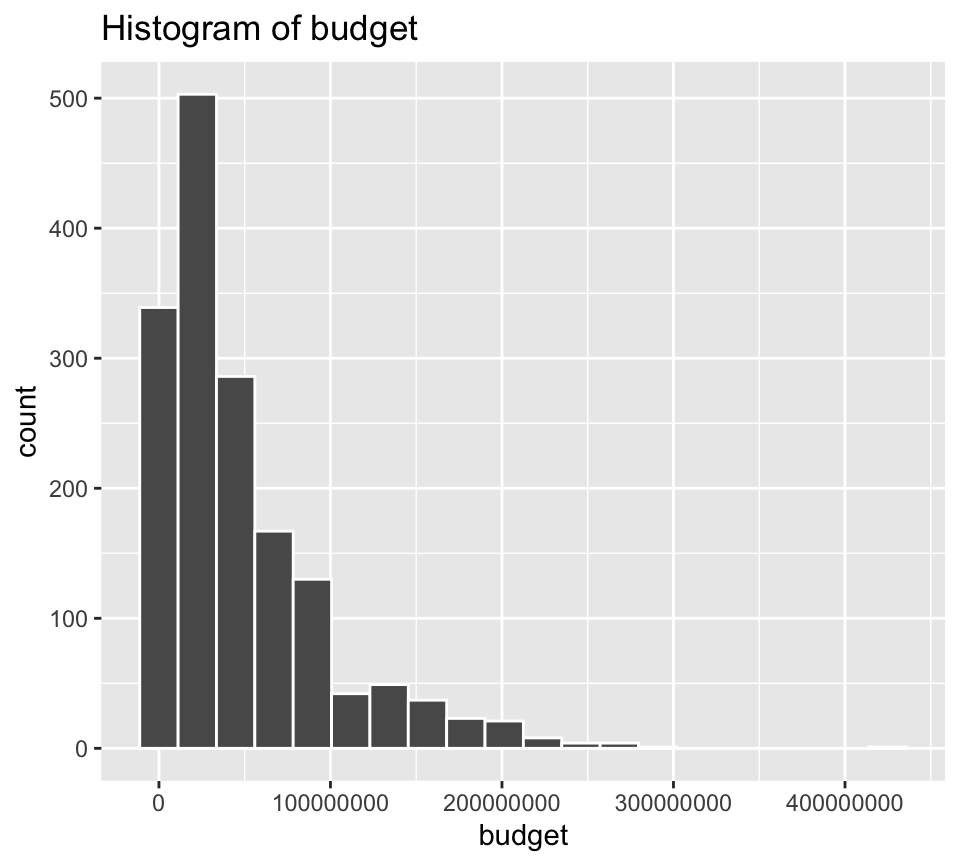
ggplot(data = bechdel90_13, mapping = aes(x = log(budget))) + geom_histogram(color = "white", bins = 20) + labs(title = "Histogram of Logarithm of Budget")
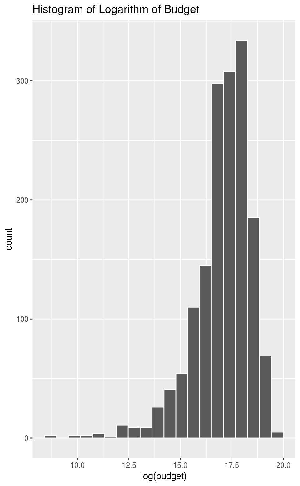
ggplot(data = bechdel90_13, mapping = aes(x = intgross_2013)) + geom_histogram(color = "white", bins = 20) + labs(title = "Histogram of International Gross")
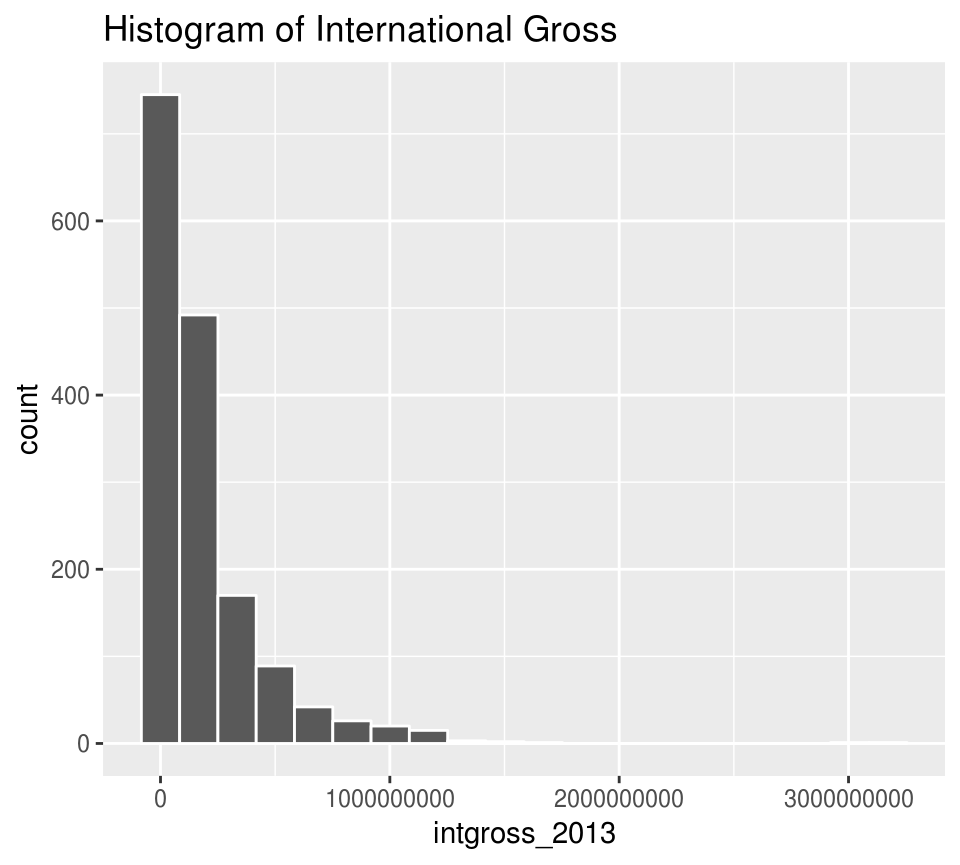
ggplot(data = bechdel90_13, mapping = aes(x = log(intgross_2013))) + geom_histogram(color = "white", bins = 20) + labs(title = "Histogram of Logarithm of International Gross")
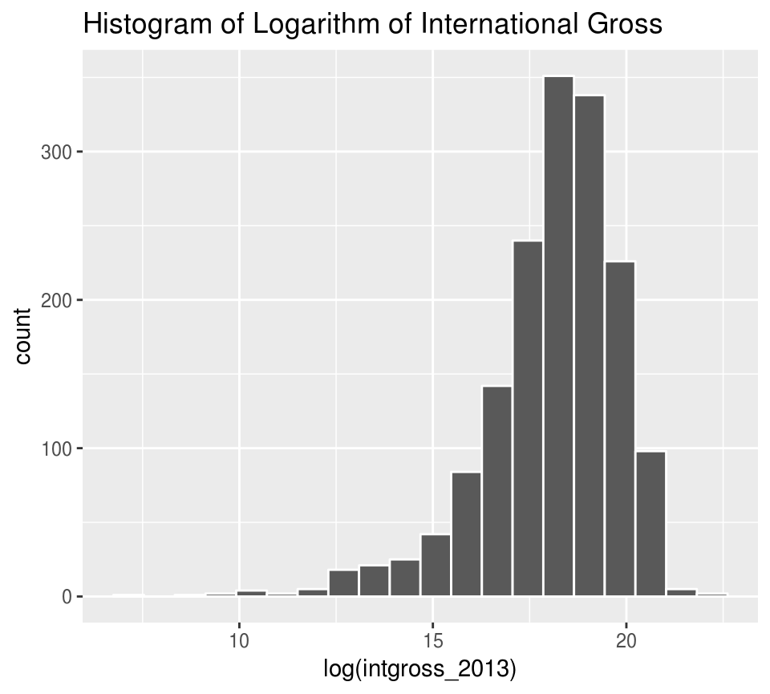
ggplot(data = bechdel90_13, mapping = aes(x = roi_total)) + geom_histogram(color = "white", bins = 20) + labs(title = "Histogram of ROI")
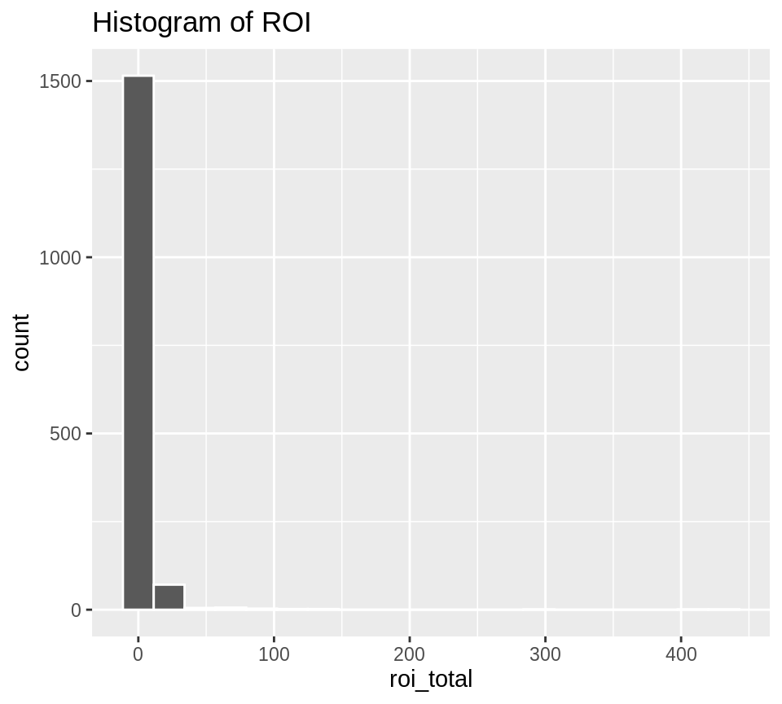
The previous distributions were skewed, but ROI is so skewed that purposefully limiting the x-axis may reveal a bit more information about the distribution: (Suggested by Mustafa Ascha.)
ggplot(data = bechdel90_13, mapping = aes(x = roi_total)) + geom_histogram(color = "white", bins = 20) + labs(title = "Histogram of ROI") + xlim(0, 25)
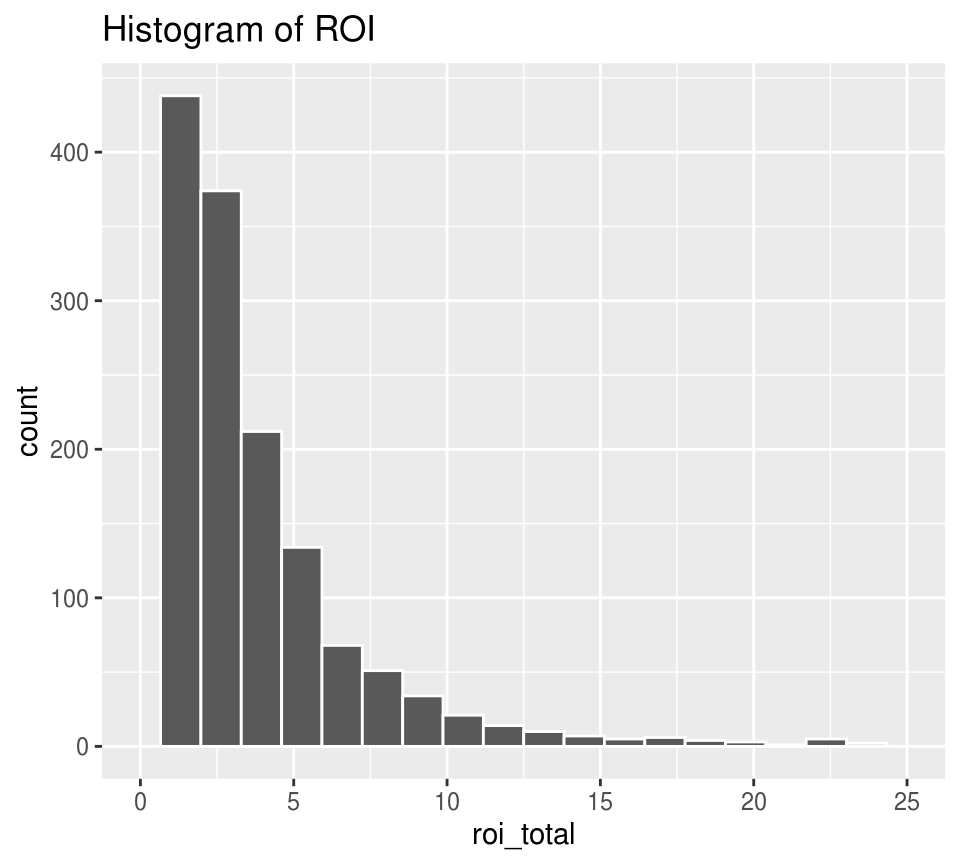
ggplot(data = bechdel90_13, mapping = aes(x = log(roi_total))) + geom_histogram(color = "white", bins = 20) + labs(title = "Histogram of Logarithm of ROI")
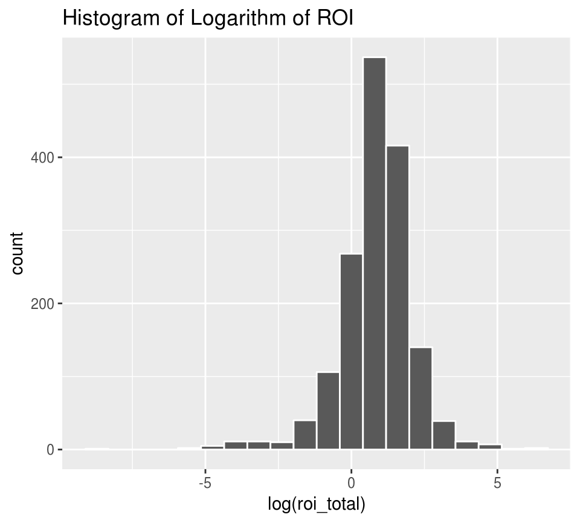
ggplot(data = bechdel90_13, mapping = aes(x = log(budget_2013), y = log(intgross_2013))) + geom_point() + geom_smooth(method = "lm", se = FALSE)
## `geom_smooth()` using formula 'y ~ x'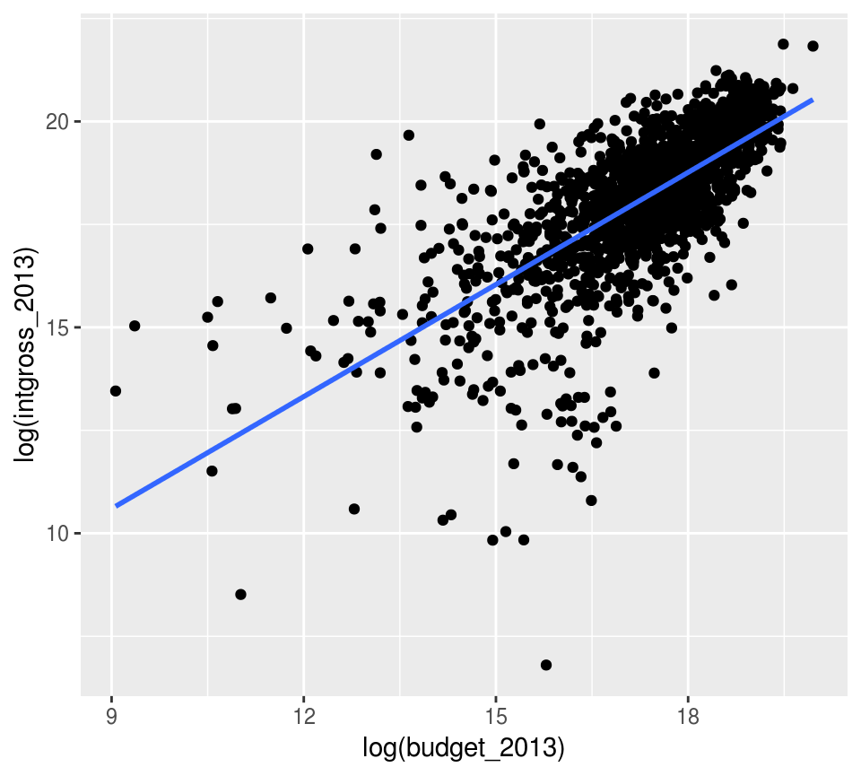
gross_vs_budget <- lm(log(intgross_2013) ~ log(budget_2013), data = bechdel90_13) tidy(gross_vs_budget)
## # A tibble: 2 x 5
## term estimate std.error statistic p.value
## <chr> <dbl> <dbl> <dbl> <dbl>
## 1 (Intercept) 2.43 0.390 6.23 5.84e- 10
## 2 log(budget_2013) 0.907 0.0225 40.3 1.20e-245log(intgross_2013) assuming log(budget_2013) is in the modelNote that the regression lines nearly completely overlap.
ggplot(data = bechdel90_13, mapping = aes(x = log(budget_2013), y = log(intgross_2013), color = binary)) + geom_point() + geom_smooth(method = "lm", se = FALSE)
## `geom_smooth()` using formula 'y ~ x'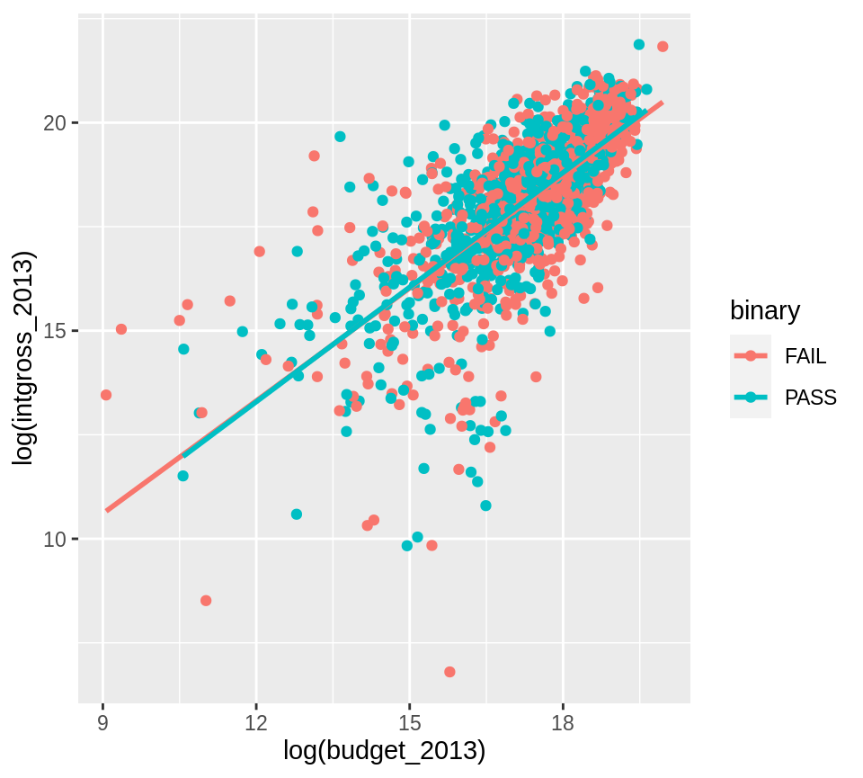
gross_vs_budget_binary <- lm(log(intgross_2013) ~ log(budget_2013) + factor(binary), data = bechdel90_13) tidy(gross_vs_budget_binary)
## # A tibble: 3 x 5
## term estimate std.error statistic p.value
## <chr> <dbl> <dbl> <dbl> <dbl>
## 1 (Intercept) 2.36 0.399 5.91 4.10e- 9
## 2 log(budget_2013) 0.910 0.0228 40.0 3.39e-243
## 3 factor(binary)PASS 0.0539 0.0635 0.849 3.96e- 1Note the \(p\)-value on factor(binary)PASS here that is around 0.40.
ggplot(data = bechdel90_13, mapping = aes(x = log(budget_2013), y = log(roi_total))) + geom_point() + geom_smooth(method = "lm", se = FALSE)
## `geom_smooth()` using formula 'y ~ x'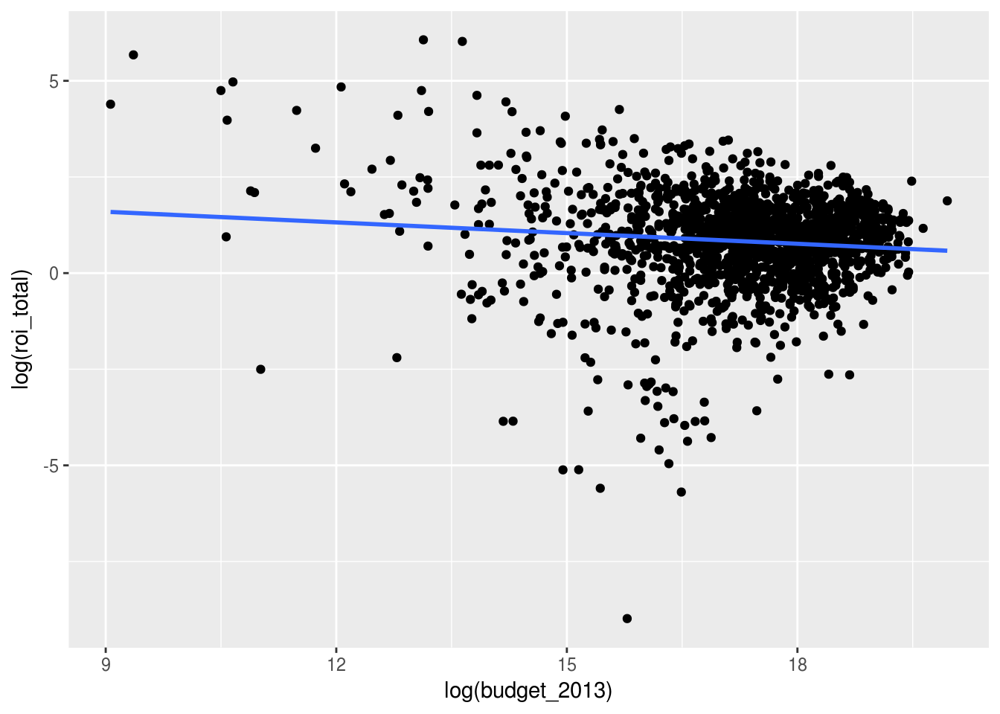
## # A tibble: 2 x 5
## term estimate std.error statistic p.value
## <chr> <dbl> <dbl> <dbl> <dbl>
## 1 (Intercept) 2.43 0.390 6.23 5.84e-10
## 2 log(budget_2013) -0.0926 0.0225 -4.11 4.16e- 5Note the negative coefficient here on log(budget_2013) and its corresponding small \(p\)-value.
log(roi_total) assuming log(budget_2013) is in the modelNote that the regression lines nearly completely overlap.
ggplot(data = bechdel90_13, mapping = aes(x = log(budget_2013), y = log(roi_total), color = binary)) + geom_point() + geom_smooth(method = "lm", se = FALSE)
## `geom_smooth()` using formula 'y ~ x'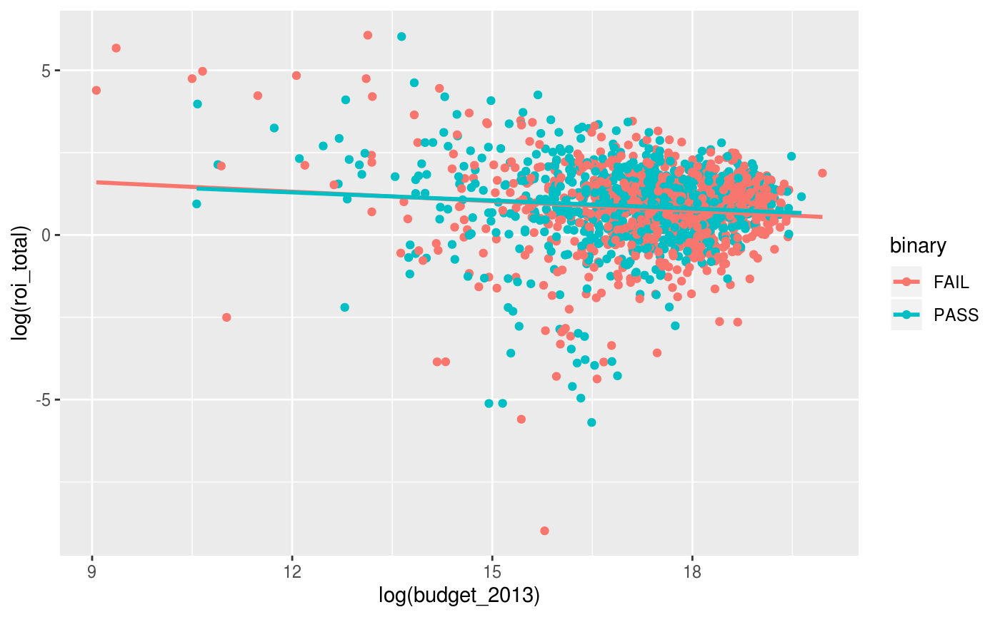
roi_vs_budget_binary <- lm(log(roi_total) ~ log(budget_2013) + factor(binary), data = bechdel90_13) tidy(roi_vs_budget_binary)
## # A tibble: 3 x 5
## term estimate std.error statistic p.value
## <chr> <dbl> <dbl> <dbl> <dbl>
## 1 (Intercept) 2.36 0.399 5.91 0.00000000410
## 2 log(budget_2013) -0.0899 0.0228 -3.95 0.0000810
## 3 factor(binary)PASS 0.0539 0.0635 0.849 0.396Note the \(p\)-value on factor(binary)PASS here that is around 0.40.
Calculating the values and creating a tidy data frame
passes_bechtel_rom <- bechdel90_13 %>% filter(generous == TRUE) %>% summarize(median_roi = median(roi_dom, na.rm = TRUE)) median_groups_dom <- bechdel90_13 %>% filter(clean_test %in% c("men", "notalk", "nowomen")) %>% group_by(clean_test) %>% summarize(median_roi = median(roi_dom, na.rm = TRUE))
## `summarise()` ungrouping output (override with `.groups` argument)pass_bech_rom <- tibble(clean_test = "pass", median_roi = passes_bechtel_rom$median_roi) med_groups_dom_full <- bind_rows(pass_bech_rom, median_groups_dom) %>% mutate(group = "U.S. and Canada")
passes_bechtel_int <- bechdel90_13 %>% filter(generous == TRUE) %>% summarize(median_roi = median(roi_int, na.rm = TRUE)) median_groups_int <- bechdel90_13 %>% filter(clean_test %in% c("men", "notalk", "nowomen")) %>% group_by(clean_test) %>% summarize(median_roi = median(roi_int, na.rm = TRUE))
## `summarise()` ungrouping output (override with `.groups` argument)pass_bech_int <- tibble(clean_test = "pass", median_roi = passes_bechtel_int$median_roi) med_groups_int_full <- bind_rows(pass_bech_int, median_groups_int) %>% mutate(group = "International") med_groups <- bind_rows(med_groups_dom_full, med_groups_int_full) %>% mutate(clean_test = str_replace_all(clean_test, "pass", "Passes Bechdel Test"), clean_test = str_replace_all(clean_test, "men", "Women only talk about men"), clean_test = str_replace_all(clean_test, "notalk", "Women don't talk to each other"), clean_test = str_replace_all(clean_test, "nowoWomen only talk about men", "Fewer than two women")) med_groups %<>% mutate(clean_test = factor(clean_test, levels = c("Fewer than two women", "Women don't talk to each other", "Women only talk about men", "Passes Bechdel Test"))) %>% mutate(group = factor(group, levels = c("U.S. and Canada", "International"))) %>% mutate(median_roi_dol = dollar(median_roi))
Using only a few functions to plot
ggplot(data = med_groups, mapping = aes(x = clean_test, y = median_roi, fill = group)) + geom_bar(stat = "identity") + facet_wrap(~ group) + coord_flip() + labs(title = "Dollars Earned for Every Dollar Spent", subtitle = "2013 dollars") + scale_fill_fivethirtyeight() + theme_fivethirtyeight()
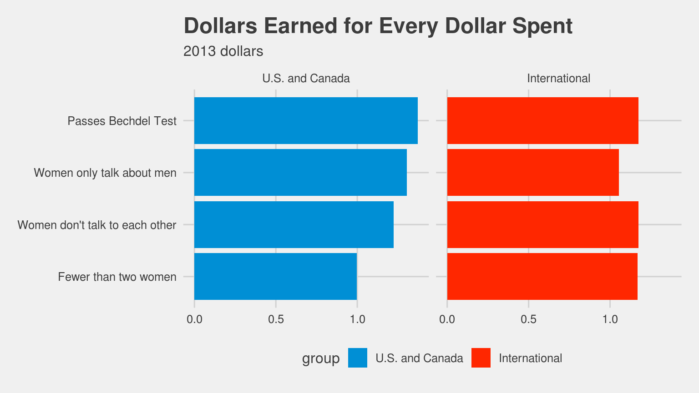
Attempt to fully reproduce Dollars Earned for Every Dollar Spent plot using ggplot
ggplot(data = med_groups, mapping = aes(x = clean_test, y = median_roi, fill = group)) + geom_bar(stat = "identity") + geom_text(aes(label = median_roi_dol), hjust = -0.1) + scale_y_continuous(expand = c(.25, 0)) + coord_flip() + facet_wrap(~ group) + scale_fill_manual(values = c("royalblue", "goldenrod")) + labs(title = "Dollars Earned for Every Dollar Spent", subtitle = "2013 dollars") + theme_fivethirtyeight() + theme(plot.title = element_text(hjust = -1.6), plot.subtitle = element_text(hjust = -0.4), strip.text.x = element_text(face = "bold", size = 16), panel.grid.major = element_blank(), panel.grid.minor = element_blank(), axis.title.x = element_blank(), axis.text.x = element_blank(), axis.ticks.x = element_blank()) + guides(fill = FALSE)
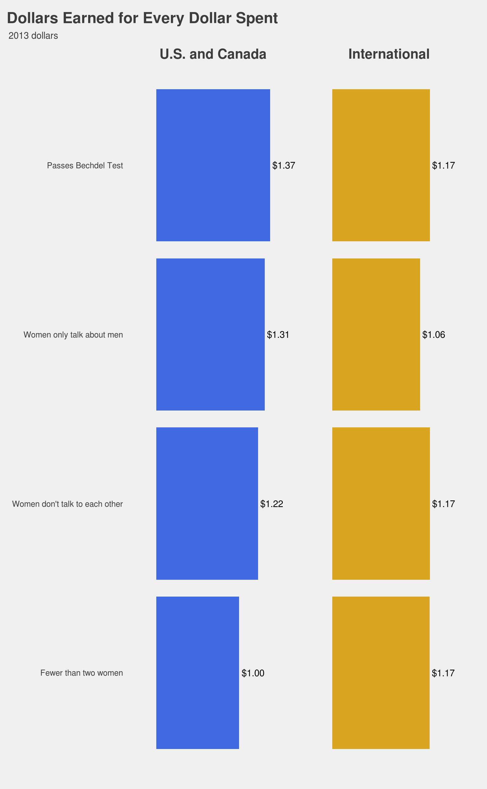